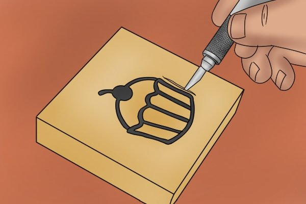
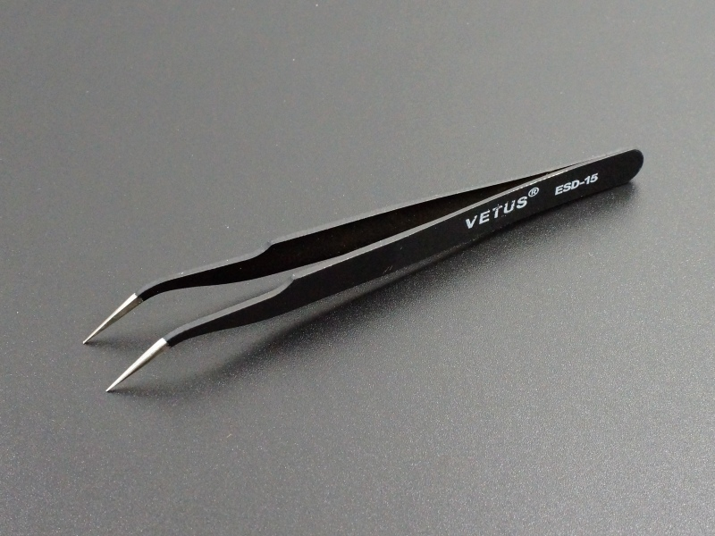
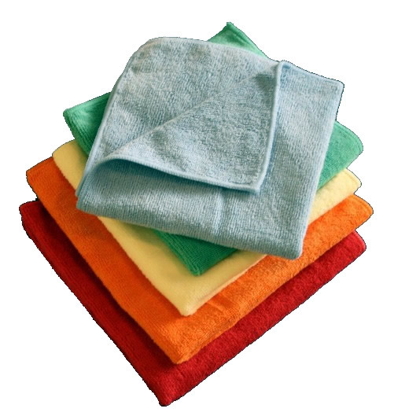
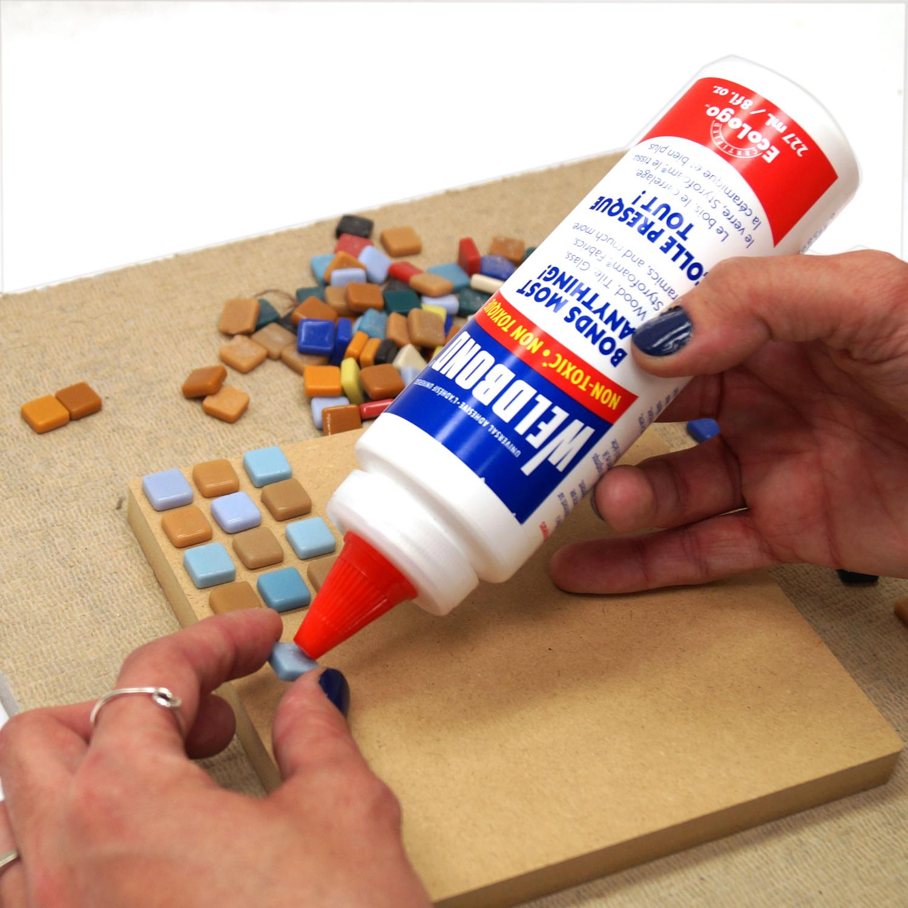

Essential Tools

Mosaic Nippers
Wheeled Mosaic Nippers
These are the scissors of the mosaic world. Tile nippers will crush glass, but wheeled mosaic nippers allow you to shape the glass. The black handled ones are Leponitts, considered the top of the line in nippers. The red handled ones are sometimes available at craft stores. I use both, because they each have their own strengths.

Craft Knife
Dental Tools
Invaluable for cleaning the last bits of grout and glue from your mosaic. I like lots of levels in my mosaics, and this means some pieces get buried and I need to dig them out after grouting. Widget Supply Company has a nice selection(and I love the name!). I also use the Fiskars Fingertip Craft Knife for particularly stubborn bits of glue.

Tweezers
pick the glass
Glass is to be respected! To avoid the sharp edges and also to make precise placement, I use reverse action tweezers to pick up smaller pieces for dipping in glue. EKSuccess’ Tweezer Bee is my favorite. The tips are very pointy for precision, they are coated in non-stick finish which helps shed the glue, and a nice squishy padded handle.

Microfiber Cloths
Helps seperate glass
When cleaning off grout, I skip the sponge idea, and use microfiber cloths. They have just enough tooth to remove grout haze, and can be used over and over.

Weldbond Glue
Stick the glass
Non-toxic, washable, pvc white glue which dries clear, and which with some water and prodding, allows you take out pieces after they’ve already dried